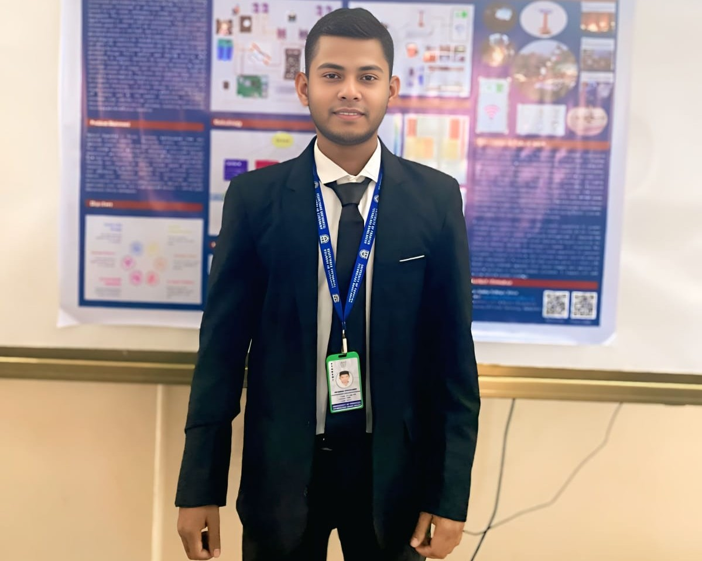

About
I am an undergraduate student in IoT and Robotics Engineering at the University of Frontier Technology, Bangladesh. I am focused on applying my knowledge in Artificial Intelligence, Machine Learning, Deep Learning, IoT, Robotics, Aerospace, Embedded Systems, and Autonomous UAV development to real-world applications and research.
I work across Python, n8n AI agentic automation, MQTT, C, C++, Java, Unity, ROS2, Gazebo, RViz2, and PX4 for simulation and autonomous control, and build with Arduino, ESP32, Raspberry Pi, and Pixhawk hardware. I am also proficient in full-stack development with Laravel and Flutter.
My recent work includes an LLM-controlled PX4 drone in ROS2 Jazzy, an AI-edge autonomous Mars rover prototype, and a multi-service disaster-response drone with wireless internet service — built as part of my ongoing exploration of UAVs, aerospace, automation, and AR/VR applications.
Two of my papers, on IoT-based health monitoring and low-cost RC aircraft telemetry, have been submitted to and published at IEEE conferences (ICEFronT 2026, ICCIT 2025).
My curriculum vitae can be found here.
